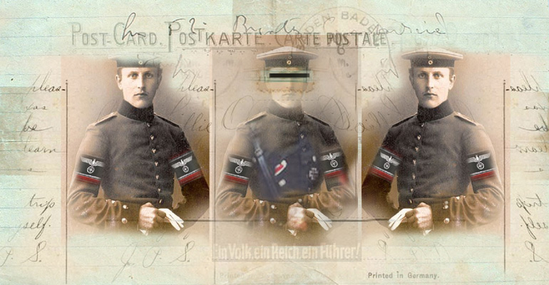

Three Flash Movies
by Peter Greenaway and Istvan Horkay
get Flash player via MOCA's New Media gallery

Peter Greenaway Sandor Soeth Istvan Horkay 2004
Flash
Movie Sequence
WARNING!
_________________________________________________________ Peter
Greenaway ________________________________________________________ Cast ___________________________________________________________ Producer
___________________________________________________________
Don Archer, MOCA director
Big files! Very long downloads!
Maybe 10-15 minutes each even at very high bandwidth.
If problems, please try at another time when there may be less demand on the server.
Story by
Graphic design
Horkay Istvan
© 2004
Video Assist
Tibor Kovacs- egri
Szilvi Ruszev
Horkay Péter
Horkay Istvan
Kolnhofer Istvan
Music
Sandra Chechik
Sandor Soth
Peter Greenaway, born in Great Britain, is an experimental and alternative filmmaker
based in Holland. Istvan Horkay is a Hungarian digital artist whose
work has long appeared at MOCA and is well-represented in museums and galleries
in Europe and America. Bolzanogold, a Flash movie, is a collaboration
between the two artists, with a passionate musical score by Canadian-born Sandra Chechik.
Bolzanogold is a fictional documentary based on a Greenaway
story relating to the transport of 101 Nazi contraband gold bars (later reduced to 92,
the atomic number for Uranium) to the small city of Bolzano, Italy, in the waning days of World War II.
The gold was probably retreived and smelted down from Nazi victims or from crucifixes.
Numbers become a significant motif in the movie, as does the Star of David, the emblem of identity
that the Nazis required the Jews to wear. It is a documentary of hallucinating real documents, postcards,
family photographs, museum relics, scientific devices and historical symbols, and images recalling
the German occupation of Europe and the terror imposed on the Jews.
It is a movie of deep ambiguity, impossible to deconstruct, and profound to view and hear.
October 2004